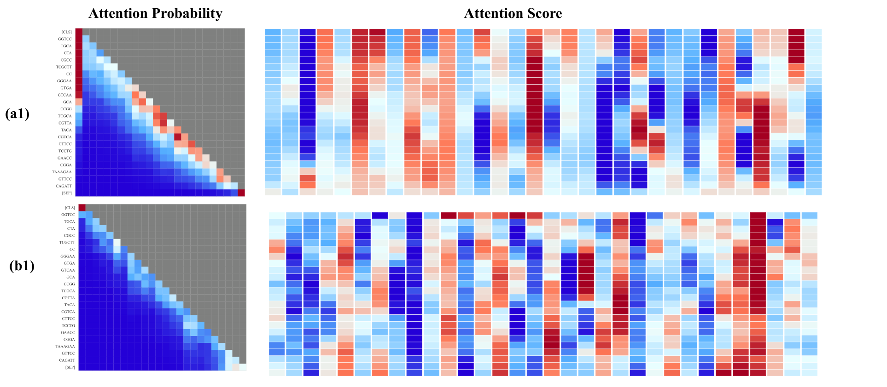
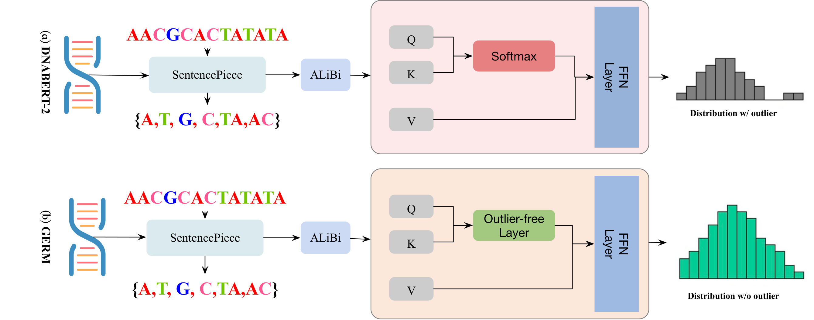
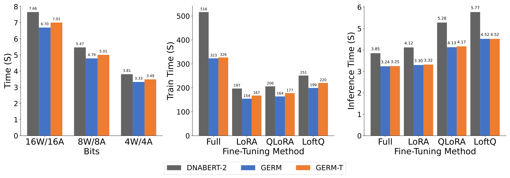

Average performance drop W4A4 · OmniQuant · 27 datasets
94.78%17.17%
Smaller loss under 4-bit quantization
DNABERT-2 → GERM
Outlier-free attention for DNA models that are cheap to adapt and quantize.
 1Northwestern University
1Northwestern University 3Massachusetts Institute of Technology
3Massachusetts Institute of TechnologyGenomic foundation models are useful to labs that cannot afford to run them. The standard shortcuts, low-rank adaptation and quantization, lose much of their accuracy.
Many users of models such as DNABERT-2 work in biomedical labs rather than on GPU clusters. Low-rank adaptation (LoRA) reduces the cost of fine-tuning, and post-training quantization reduces the cost of inference. Applied directly to an existing model, both cause large performance drops.
The paper attributes this to outliers in the attention mechanism. Softmax must place all of its probability mass on real tokens, so tokens that carry little information can still receive large attention weights. The resulting extreme activations are inherited from pretraining and, as prior work reports, amplified by low-rank adaptation.
Row (a1) shows the vanilla model. Its attention probabilities keep a red column on the leading [CLS] token for most queries.
Row (b1) is the same sequence under GERM. The leading column is no longer dominant.
Figure 3, first pair · last hidden layer
(a1) Vanilla DNABERT-2 · (b1) GERM

Keep the DNABERT-2 design, and swap the attention normalization for one that can attend to nothing.
GERM builds on the outlier-efficient Hopfield layer of OutEffHop. It replaces Softmax in every attention layer with \(\operatorname{Softmax}_1\) and trains the model from scratch. Because full pretraining is expensive, the paper also proposes GERM-T, which reuses an existing checkpoint and adds the outlier-free layer only for a short final stretch of training.

\(\operatorname{Softmax}_1\) adds one to the denominator. When every score is low, the weights can all approach zero, so the layer can make almost no update without concentrating mass on an uninformative token.
DNA is tokenized with SentencePiece and BPE, using a vocabulary of 4096. Positions enter as ALiBi linear biases on the attention scores, with a fixed slope \(m\) per head, so sequences longer than those seen in pretraining can be processed.
GERM-T trains with the vanilla architecture first, then continues with the outlier-free layer for the remaining steps. The representative model uses 40K of 200K steps. It is a compromise: it avoids retraining from scratch, but removes fewer outliers than GERM.
| Model | Attention normalization | Outlier-free steps | Needs training from scratch |
|---|---|---|---|
| DNABERT-2 | Softmax | 0 | — |
| GERM-T | Softmax, then \(\operatorname{Softmax}_1\) | 40K of 200K | No |
| GERM | \(\operatorname{Softmax}_1\) | 200K of 200K | Yes |
Section 2 and the model setup in Section 3. The 160K/40K split follows from the 200K-step total and the 40K-step GERM-T model. Read Section 2 ↗
Appendix A gives an expressiveness guarantee for low-rank adaptation of transformer-based genomic models that use \(\operatorname{Softmax}_1\). The paper defines outliers as tokens or activations that disproportionately influence attention despite carrying little information, and measures them with average kurtosis and the maximum infinity norm of activations. Read the appendix.
Average performance drop W4A4 · OmniQuant · 27 datasets
DNABERT-2 → GERM
Average performance drop LoRA · rank 128 · 27 datasets
DNABERT-2 → GERM
Across the 27 datasets, GERM reduces average kurtosis by about 92.14% and the maximum infinity norm by about 82.77% relative to DNABERT-2. GERM-T reduces them by about 7.20% and 53.78%: its kurtosis stays close to the baseline, while the infinity norm falls by about half.
| Model | FP16 MCC ↑ | Average kurtosis ↓ | Max infinity norm ↓ |
|---|---|---|---|
| Official DNABERT-2 checkpoint | 66.11 | 39.68 | 53.61 |
| DNABERT-2 | 59.11 | 270.90 | 61.64 |
| GERM-T | 59.30 | 251.40 | 28.49 |
| GERM | 59.73 | 21.29 | 10.62 |
DNABERT-2 is the paper's vanilla baseline; all three models are fully fine-tuned before evaluation. The official checkpoint is the released DNABERT-2 model and the reference for the paper's Delta MCC values. It is not the baseline for the percentage changes above.
Each fully fine-tuned model is quantized with four methods. GERM keeps most of its FP16 accuracy at 8 and 6 bits. At W4A4 with OmniQuant it retains an MCC of 49.42, while the other two models fall below 4. GERM-T is competitive at 8 bits, with the smallest drop under SmoothQuant and OmniQuant W8A8, but it degrades at 6 and 4 bits in several settings.
| Method | Bits | DNABERT-2 | GERM-T | GERM | |||
|---|---|---|---|---|---|---|---|
| MCC ↑ | Drop ↓ | MCC ↑ | Drop ↓ | MCC ↑ | Drop ↓ | ||
| None (FP16) | W16A16 | 59.11 | — | 59.30 | — | 59.73 | — |
| Traditional | W8A8 | 33.60 ± 0.41 | 43.81% | 38.38 ± 0.15 | 35.27% | 57.30 ± 0.08 | 3.77% |
| SmoothQuant | W8A8 | 36.51 ± 0.02 | 38.63% | 57.52 ± 0.00 | 3.01% | 56.65 ± 0.15 | 4.82% |
| W6A6 | 20.74 ± 0.04 | 66.18% | 30.34 ± 0.04 | 48.83% | 56.48 ± 0.07 | 5.45% | |
| W4A4 | −1.03 ± 0.06 | 101.24% | 0.22 ± 0.00 | 99.63% | 20.05 ± 0.00 | 69.44% | |
| Outlier Suppression | W8A8 | 25.26 ± 0.02 | 57.60% | 42.57 ± 0.05 | 28.31% | 45.87 ± 0.08 | 25.23% |
| W6A6 | 27.84 ± 0.28 | 52.71% | 46.02 ± 0.06 | 22.34% | 40.57 ± 0.56 | 36.27% | |
| OmniQuant | W8A8 | 49.92 ± 0.05 | 15.76% | 56.80 ± 0.12 | 4.21% | 55.99 ± 0.09 | 5.95% |
| W6A6 | 48.47 ± 0.14 | 18.61% | 55.41 ± 0.00 | 6.57% | 55.70 ± 0.03 | 6.41% | |
| W4A4 | 2.94 ± 0.19 | 94.78% | 3.86 ± 0.00 | 93.49% | 49.42 ± 0.00 | 17.17% | |
MCC is the Matthews correlation coefficient averaged over 27 datasets. Drop is the average relative performance drop after quantization, as reported in the paper. Traditional W8A8 follows Bondarenko et al. Outlier Suppression was evaluated at 8 and 6 bits only. Averaged over all settings, the paper reports that GERM reduces the quantization drop by 64.34% relative to DNABERT-2, and GERM-T by 31.42%.
Full table & protocolStarting from each pretrained checkpoint, the paper fine-tunes with LoRA and with two quantized variants, QLoRA and LoftQ. GERM loses less accuracy than DNABERT-2 in all three. On average, the paper reports a 37.98% improvement for GERM and 20.01% for GERM-T over the baseline.
| Method | DNABERT-2 | GERM-T | GERM | |||
|---|---|---|---|---|---|---|
| MCC ↑ | Drop ↓ | MCC ↑ | Drop ↓ | MCC ↑ | Drop ↓ | |
| Full fine-tuning | 59.11 | — | 59.30 | — | 59.73 | — |
| LoRA | 50.91 ± 1.67 | 13.87% | 55.60 ± 0.28 | 6.23% | 57.27 ± 0.70 | 4.12% |
| QLoRA | 50.65 ± 0.13 | 14.31% | 51.05 ± 0.07 | 13.90% | 53.16 ± 0.21 | 10.99% |
| LoftQ | 50.76 ± 0.06 | 14.05% | 51.20 ± 0.13 | 13.65% | 53.11 ± 0.08 | 11.08% |
LoRA uses rank 128 and alpha 256; QLoRA and LoftQ use the same rank with 4-bit quantization. Drop is relative to each model's own full fine-tuning score. See Table 2 and Section 3.2 ↗
All three models were run on one NVIDIA GeForce RTX 2080 Ti with 11GB of memory. GERM and GERM-T take less time per epoch than DNABERT-2 for full fine-tuning and each low-rank method, and quantized inference is also faster. The paper reports that GERM fine-tunes in about 5 minutes on this card.

The experiments use the DNABERT-2 architecture at 117 million parameters, pretrained with masked language modeling. Downstream evaluation covers 27 classification datasets across 7 tasks and 4 species, with input lengths from 70 to 1000. Each evaluation is repeated with three random seeds.
The appendix extends the comparison to the Nucleotide Transformer, including a 2.5B model, and to clipped softmax and gated attention. The continual-learning ablation compares 20K, 40K, and 100K outlier-free steps; 40K gives GERM-T the best trade-off in that study. GERM-T still loses substantial accuracy under 4-bit quantization and under QLoRA and LoftQ, and the authors leave outlier removal without retraining from scratch to future work.
Ablations and limitations ↗@inproceedings{luo2025fast,
title = {Fast and Low-Cost Genomic Foundation Models via Outlier Removal},
author = {Haozheng Luo and Chenghao Qiu and Maojiang Su and Zhihan Zhou and
Zoe Mehta and Guo Ye and Jerry Yao-Chieh Hu and Han Liu},
booktitle = {Proceedings of the 42nd International Conference on Machine Learning},
series = {Proceedings of Machine Learning Research},
volume = {267},
pages = {41254--41289},
publisher = {PMLR},
year = {2025},
url = {https://proceedings.mlr.press/v267/luo25g.html}
}